OpenAPI and HEART, side by side
One garden server ships a change overnight. Two dashboards, one bespoke and one generic, meet it the next morning. The same regression suite tests both.
Both clients get regression-tested on every release; that never goes away. What late binding saves is the rework between the server's release and the client's.
The change
On Monday the garden serves version 1.0.0. Overnight the garden team ships the frost, version 1.1.0: a hard frost can freeze a planted bed, watering a frozen bed is no longer allowed (it would split the roots), and a new act, Thaw the bed, covers it with fleece. Only the server changes.
In the OpenAPI description, FROZEN joins the status enum, POST /beds/{id}/actions/thaw appears, and the version becomes 1.1.0. The rule for watering is still a sentence of prose: "Only allowed when status is PLANTED."
Two dashboards, bound at different times
Both are small htmx web pages that poll their bed every 2 seconds. The only difference is when they learn what the garden can do.
TypeScript. Its client is generated by OpenAPI Generator 7.8.0 from Monday's garden-1.0.0.json. Statuses, buttons and calls are fixed when it is built.
Kotlin, over the ARTIE client. It knows the bookmark and nothing else. Statuses, buttons and calls come from each HEART response, every time it renders.
Where the buttons come from
Bespoke, src/dashboard.ts (1.0)
const STATUS_LABEL: Record<BedStatusEnum, string> = {
EMPTY: "Empty",
PLANTED: "Planted",
READY_TO_HARVEST: "Ready to harvest",
};
// From the description: sow an empty bed,
// harvest a ready one, water a planted one.
function buttonsFor(status: BedStatusEnum) {
switch (status) {
case BedStatusEnum.Empty:
return [SOW];
case BedStatusEnum.ReadyToHarvest:
return [HARVEST];
default:
return [WATER];
}
}
Reasonable code, written the common way. The default is a bet that Monday's three statuses are all there will ever be.
ARTIE, Render.kt
fun card(rep: HeartRepresentation) = """
<table class="state">${state(rep.state)}</table>
<div class="buttons">${
rep.affordances.values.joinToString("") {
form(rep, it)
}
}</div> ..."""
/** An offered form: one input per schema
* property, and its title on the button. */
private fun form(rep, form: AffordanceForm) = ...
<button>${form.title}</button>
No status, no rule, no act name. The buttons are whatever forms the bed's representation offers right now.
What the regression suite found
One Cucumber-JS suite drives each dashboard over HTTP the way a person would: open a bed, read its buttons and status, press a button. Seven scenarios, three of them written on Monday and four added with the frost. The dashboards kept running from Monday into Tuesday; only the garden restarted.
| Release | Server | Bespoke dashboard | ARTIE dashboard |
|---|---|---|---|
| Monday | 1.0.0 | 1.0 · 3 of 3 | 3 of 3 |
| Tuesday morning | 1.1.0, the frost | 1.0, unchanged · 3 of 7 | unchanged · 7 of 7 |
| Tuesday, after the rework | 1.1.0 | 1.1 · 7 of 7 | no rework needed |
| Tuesday morning scenario | Bespoke 1.0 | ARTIE |
|---|---|---|
| A frozen bed shows it is frozen | fail · the status reads undefined | pass · FROZEN |
| A frozen bed offers thaw, and not water | fail · shows "Water the bed" | pass · shows "Thaw the bed" |
| Thawing a frozen bed lets it be watered again | fail · no "Thaw the bed" button | pass |
| Every button a frozen bed shows is one the garden accepts | fail · POST /beds/2/actions/water-cell → 409 | pass · nothing refused |
| Monday's three scenarios | pass | pass |
What the operator saw
Bed 2 on each dashboard, captured from the running pages with headless Chrome. Both dashboards load the same stylesheet, so the only difference you see is what each one knew.
Monday, server 1.0.0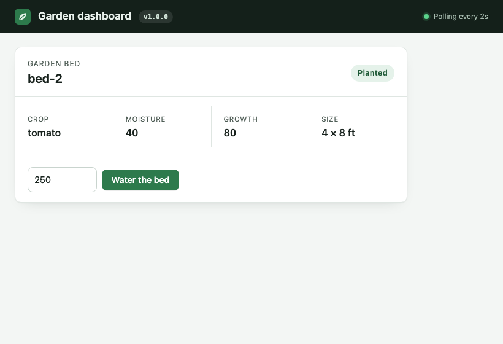
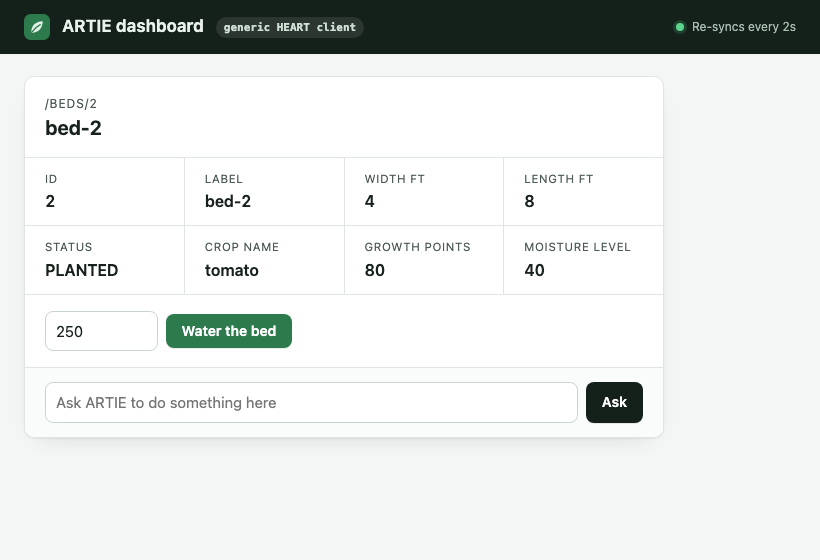
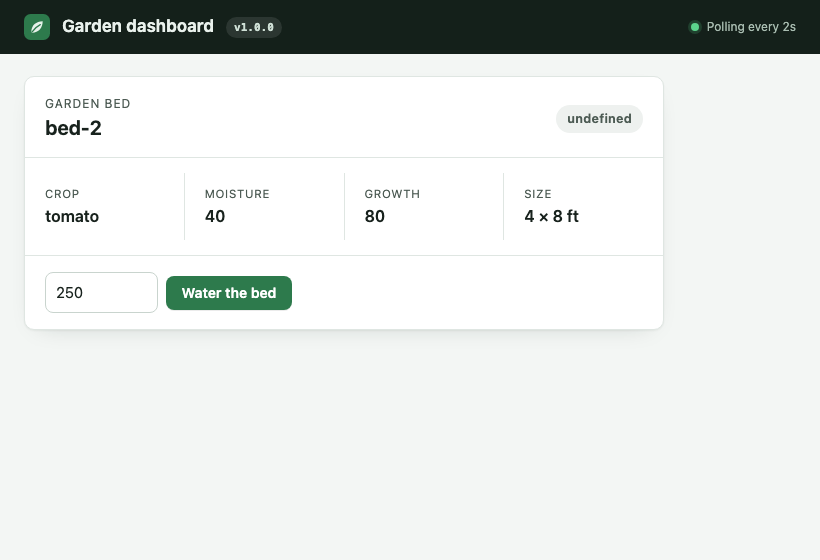
undefined, and still Water, which the garden refuses with a 409.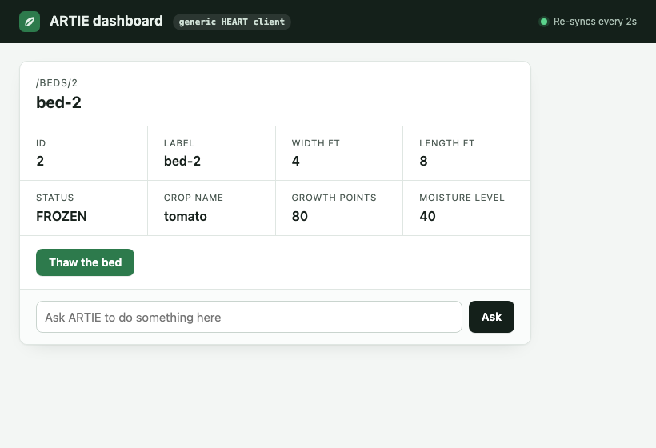
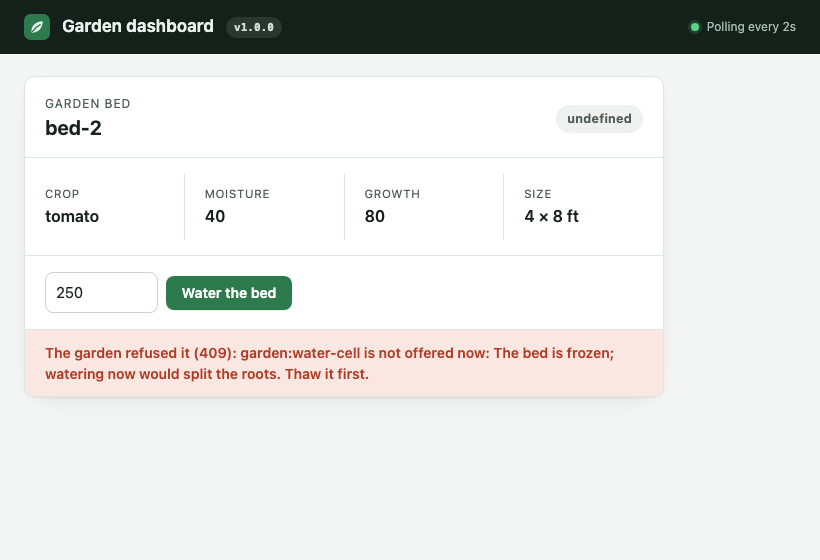
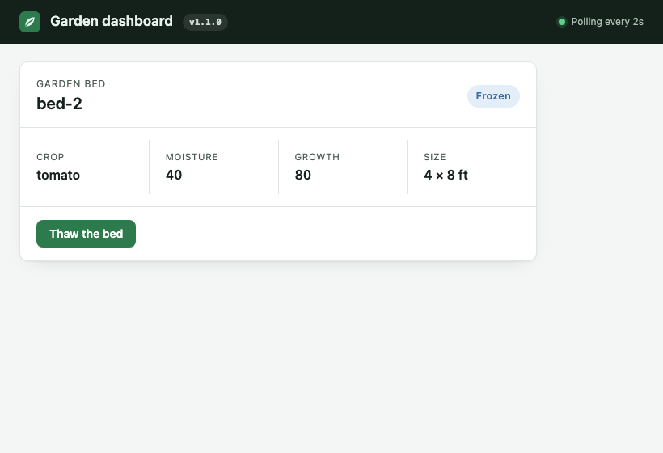
The rework the bespoke dashboard needed
This is what the team did to get from 1.0 to 1.1, recorded as it happened.
- Regenerate the client from
garden-1.1.0.json. 12 generated files changed, 75 lines in and 13 out. Most of that is the version stamp in each file; the real changes arethawinBedsApi.tsandFROZENinBed.ts. - Build, and read what the compiler says. One error:
src/dashboard.ts(26,7): error TS2741: Property 'FROZEN' is missing in type '{ EMPTY: string; PLANTED: string; READY_TO_HARVEST: string; }' but required in type 'Record<BedStatusEnum, string>'.The compiler said nothing about the
switch. Itsdefaultstill gave a frozen bed a Water button. Only the regression suite caught that. - Edit by hand. 11 lines in and 4 out of
src/dashboard.ts: the badge, a Thaw button, its case, its call and its route. Plus the version inpackage.jsonandgenerate.sh. - Build, test, release, deploy dashboard 1.1.0. Until this step, the people using it had no way to thaw a bed, and a Water button the garden refuses.
The cost, side by side
regenerate, fix, edit, release; 12 generated files and 14 hand-written lines
no regeneration, no edit, no release; still running since Monday
run on every dashboard at every release: 3 runs for bespoke, 2 for ARTIE, because ARTIE had no new release to test
Testing is not the saving
A server change gets regression-tested whatever the client. The garden team ran the same suite against both dashboards on Monday and again on Tuesday morning, and that is what told them the bespoke dashboard was broken. Generic clients don't make that testing unnecessary, and this demo doesn't claim they do.
What late binding changes is everything after the test run. The bespoke team had to:
- regenerate,
- fix what the compiler found,
- find what it missed,
- edit, rebuild, release and redeploy,
- and leave users without Thaw until all of that was done.
The ARTIE dashboard passed the same suite on Tuesday morning as it stood. The benefit is evolvability: the server can change what it offers, and generic clients follow without rework.
Who presses Thaw
A generic client can show and perform an act it was never coded for. Something still has to decide to press it.
- A person sees "Thaw the bed" appear on the ARTIE dashboard while the page is open, because the card re-syncs and renders whatever the bed offers.
- A model can choose from the same offers. Given "Bed 2 looks frozen. Please look after it.", Claude, through
ArtieAgent, chosegarden:thaw. ARTIE checked the choice against the offered forms and sent it, and the bed was planted again. That was one run; every call it made got a 2xx.
Six more kinds of change
The frost adds a state and an act, which is the change that suits HEART best. A real API also moves URLs, renames things, tightens limits and asks for new input. So the garden got a Wednesday release in six variants. Each one is a single change from Monday, chosen at startup with GARDEN_CHANGE.
Four clients, none changed since Monday, then tried to water bed 2 with about 250 ml. Three are the real contenders; the fourth is a control:
- the bespoke dashboard 1.0;
- the ARTIE dashboard, driven the way a person would drive it. The person finds the button whose title is about watering (
/water|irrigat/i), keeps what the form shows, and presses it. The same rule drives the bespoke dashboard; - Claude, through the ARTIE dashboard's Ask box, given "Water bed 2 with about 250 ml". That's one run per variant;
- a control: a script that uses the ARTIE library but hard-codes the act
garden:water-celland its fieldmilliliters. It isn't a generic client. It's there to show what early binding costs, whatever the protocol.
The score is the garden's own history: did bed 2 get a new CellWatered event? Under tighter-limit the person also typed 800 ml on the bespoke dashboard, whose field still allowed 1000.
| Change | Bespoke 1.0 | ARTIE dashboard | Claude | Control: early-bound script |
|---|---|---|---|---|
move-urltarget moves to /actions/water | 404 | watered | watered | watered |
rename-fieldmoistureLevel becomes soilMoisture | watered shows moisture undefined | watered shows "Soil moisture 40" | watered | watered |
rename-actrelation becomes garden:irrigate | watered | watered | watered, chose garden:irrigate | "No affordance 'garden:water-cell'" |
retitle"Water the bed" becomes "Irrigate the bed" | watered | watered | watered | watered |
tighter-limitmaximum 1000 ml becomes 500 | watered at 250 422 at 800 | watered | watered | watered |
new-required-inputmethod, drip or spray | 422 | watered, with the form's drip | asked "Should the water reach bed 2 by drip or by spray?" and sent nothing | 422, method missing |
| Watered, of 6 | 4 | 6 | 5 | 4 |
Raw attempts, with every request each client sent and its status: results/changes/attempts.jsonl. Run it again with run-changes.sh.
What it shows
No generic client broke under any of the six changes. The only failures came from clients that bound early: the bespoke dashboard and the control script.
- The ARTIE dashboard binds nothing about the garden. It shows whatever members the bed has and whatever forms it offers, and it posts each form to its own target. Under all six changes it watered the bed with no change of its own.
- Claude reads relations, titles and schemas at run time, so the renamed act and the changed schema didn't stop it. Under
new-required-inputit asked which method to use instead of picking one. The bed wasn't watered, but nothing was refused, and the choice it asked about is a real one. - The bespoke dashboard never reads relations or titles, so renaming and retitling the act didn't touch it. It hard-codes the URL, the member names and the request body, so those changes did.
- The control script survived the changes the forms absorbed for it (the URL, the member, the title, the limit) and broke on exactly the two names written into its code. Nobody expects early-bound code to survive server-directed change. It shows the cost of binding early, not a weakness of HEART.
The first version of this section listed the script as a fourth ARTIE client and concluded: "So both claims were partly right. Late binding didn't make every ARTIE client immune. The script failed where it had bound early, as any client does. And no change in this set hurt a client that bound nothing early."
The project's author pushed back, and was right. The script isn't a generic client; it's early-bound code that happens to use the ARTIE library. Counting it as evidence that a change "hurts ARTIE" was a red herring. Fielding's rule 6 lets a client's transitions be "determined (or limited by) the client's knowledge of media types", which is what the generic ARTIE clients do. The script now appears as a control, and the claim that some changes hurt ARTIE is withdrawn. The Fielding assessment records the same change of mind.
The rework each failure needed
| Failure | Bespoke: regenerate, then tsc says | Then by hand |
|---|---|---|
move-url | 0 errors | nothing; rebuild, release, redeploy |
rename-field (display) | 1: Property 'moistureLevel' does not exist on type 'Bed' | rename the member in the card |
tighter-limit (800 ml) | 1, about the request type's name, not the limit | change the field's max; the compiler never mentions 500 |
new-required-input | 1, about the request type's name | add a method field to the form and the call |
Control script, rename-act | one line: "garden:water-cell" becomes "garden:irrigate" | |
Control script, new-required-input | one line: add put("method", "drip"), which is a choice the script's author now has to make | |
What each dashboard showed
rename-field
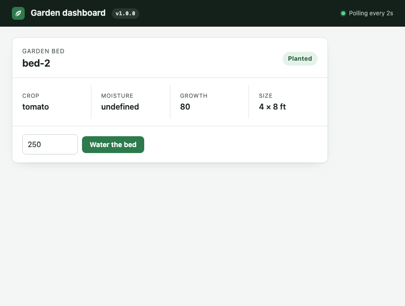
undefined.retitle
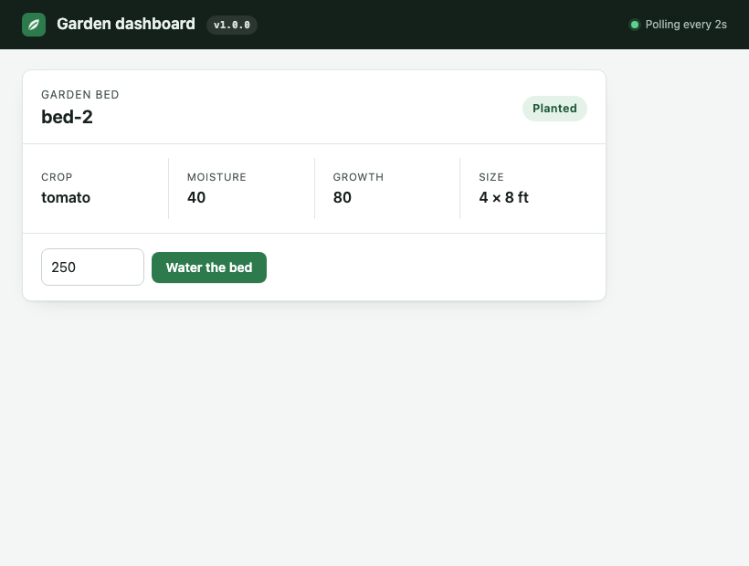
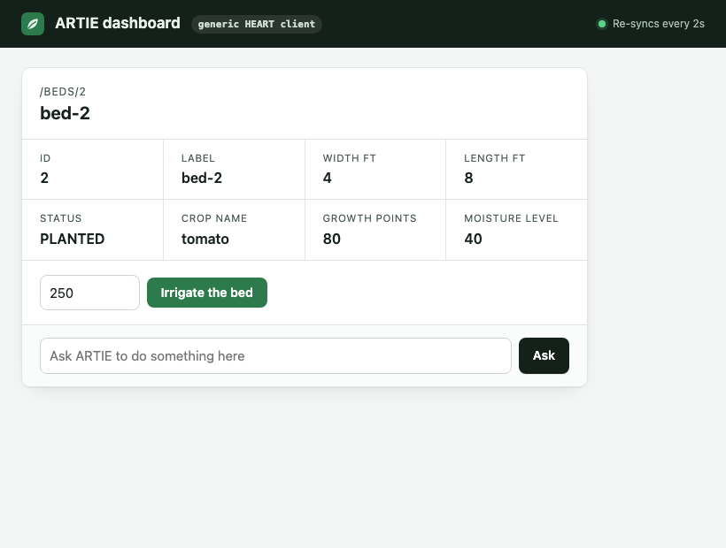
new-required-input

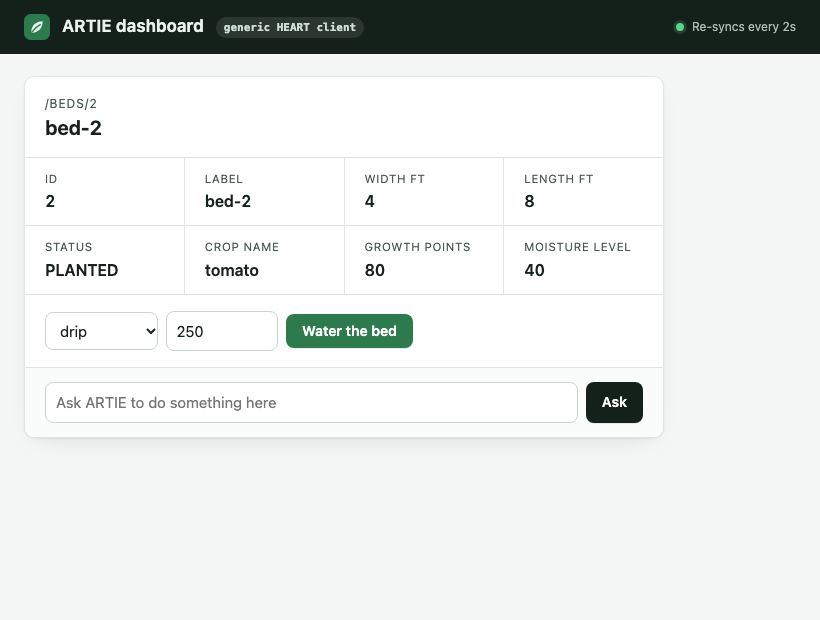
drip first.All twelve captures, two per change, are in results/screenshots/changes/.
A HEART bug this found
The first run of these variants found a bug in HEART itself. A Layer 1 ETag named only the state version, dialect and rung, as in "seq-3.hsf.L2". After the garden restarted with move-url, bed 2's state hadn't changed, so its ETag hadn't either. The ARTIE dashboard revalidated, got 304, reused its stored form, and posted to the old target, which returned 404.
A strong validator must change whenever the bytes do (RFC 9110 §8.8.1). Each ETag now ends with a digest of the representation: "seq-3.hsf.L2.e8e98768123683fa". The results above come from the run after that fix. The first run's dashboard and Claude results were void and are not used.
OpenAPI at its best
The bespoke dashboard is OpenAPI as most teams use it: a client generated once, then frozen. A fair critic would say that's OpenAPI at its weakest. So the exhibit adds OpenAPI at its strongest, in two ways, and keeps the typical client as it is.
- A client that reads the spec while it runs (
openapi-live/). It has no generated code. On every render it fetches/openapi.json, revalidated by itsETag, and builds the page from it: the bed's members and their titles, a button for every operation under the bed that isn't deprecated, and each button's fields from the request schema, with defaults, examples and limits. Its "bookmark" is the garden's URL, the spec's URL, and the operationgetBed. - Changes made the way a careful OpenAPI team would make them. Keep the old path working and mark it deprecated, keep the old field beside the new one, and make new input optional with a default. HEART is held to the same rules, because one declaration serves both, so HEART gained an act's former paths for this.
The spec-reading client, against the same changes
| Test | Bespoke 1.0 | Spec-reading client | ARTIE dashboard |
|---|---|---|---|
| The six Wednesday changes: bed 2 watered | 4 of 6 | 6 of 6 | 6 of 6 |
| Frost suite, Monday | 3 of 3 | 0 of 3 | 3 of 3 |
| Frost suite, Tuesday morning | 3 of 7 | 1 of 7 | 7 of 7 |
Against changes to the API's shape, the spec-reading client did as well as the ARTIE dashboard:
- it read the moved path;
- it showed the renamed field under its title;
- the renamed HEART relation never reached it, since the OpenAPI operation keeps its name;
- it showed the new title and the new limit;
- it offered drip or spray, preset to the spec's example
drip.
Against the bed's state, it failed. The spec says which acts are allowed only in prose ("Only allowed when status is PLANTED."), so the client shows every act in every state. That's why it fails every "shows exactly these buttons" check, Monday's included. On Tuesday it showed a frozen bed's status correctly, and still offered Water, Sow and Harvest beside Thaw. Pressing Water got a 409.
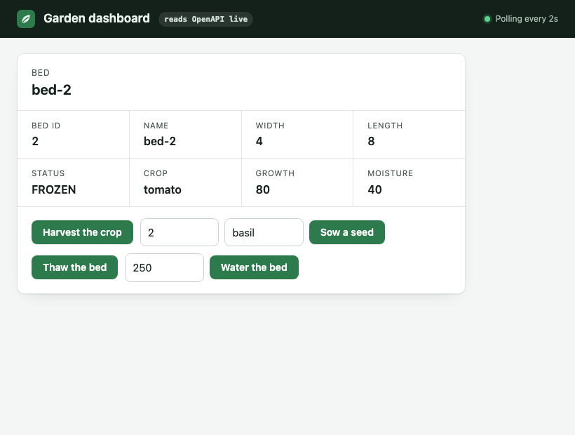
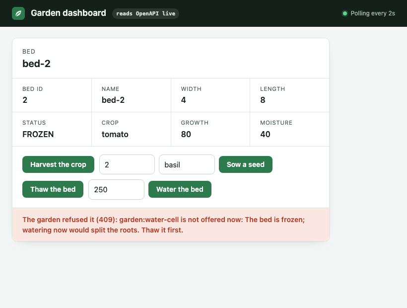
My plan predicted 5 of 6 for this client, but its own list of expected passes left out rename-act, which can't affect an OpenAPI client at all. That was a miscount, not a surprise: a client that reads the spec as it runs should absorb all six.
The careful changes, on every client
| Careful change | Bespoke 1.0 | Spec-reading | ARTIE dashboard | Claude | Control script |
|---|---|---|---|---|---|
move-url-keptnew path, old one kept, deprecated | watered | watered | watered | watered | watered |
rename-field-keptnew field, old one kept, deprecated | watered | watered | watered | watered | watered |
new-optional-inputmethod optional, default drip | watered | watered | watered | watered | watered |
With careful changes, every client keeps working, the generated one and the control script included. The differences are in what each shows and what the care costs:
- The bespoke dashboard still reads the old field, so it shows Moisture correctly. The spec-reading client hides the deprecated field and shows "Soil moisture". The ARTIE dashboard shows both, because a HEART representation doesn't yet mark a state member deprecated.
- The server team pays for it: an old path, an old field and a default, kept until every old client has moved. A team doesn't know when that is.
- Regenerating the bespoke client gave one
tscerror undernew-optional-input. As before, that came from the request type's name changing, which is how these variants are built, not from the change itself.
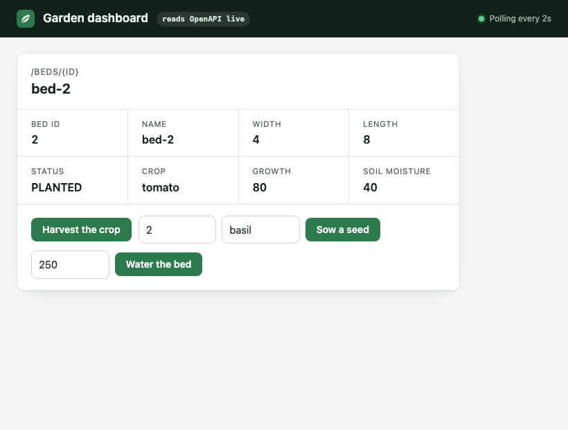
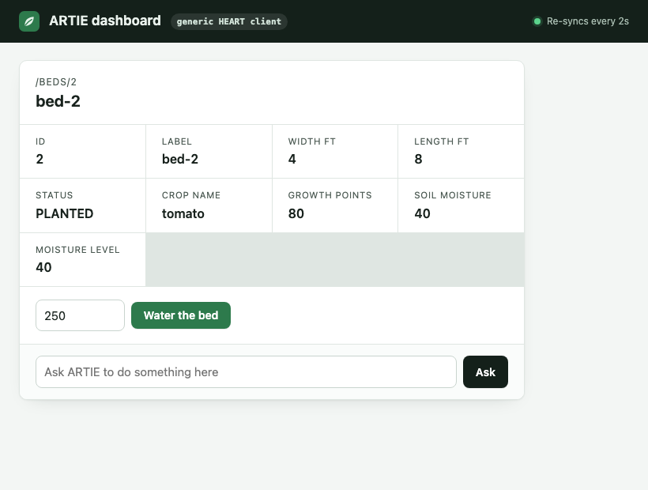
What it shows
At its best, an OpenAPI client copes with changes to an API's shape as well as a HEART client does, and careful evolution protects even a generated client. What no OpenAPI client can know is which acts this resource allows now, because the spec describes the API, not the resource's current state. That one gap is Fielding's rule 6, and it's exactly what HEART's per-state affordances fill.
Fair to say
- Both dashboards are deliberately small. The bespoke one is written the common way. A team could make it read more from the description at runtime, which is a step toward what HEART makes standard.
- Both dashboards share one stylesheet (
shared/dashboard.css), added to both before the final run, so neither looks better than the other. - The suite's page objects know where each page puts its buttons. That's the only client-specific test code; the feature file and steps are shared.
- The Claude results are one run per change, not a measured rate.
- Under
tighter-limitandnew-required-input, the garden's request schema got a new name, because each variant is a separate class. That name change is the onetscerror in each. A server that kept the schema's name would give the bespoke team no compiler error at all for those two changes, and they'd have only the regression suite. - The control script is short on purpose. A script could look acts up by title, as the dashboard does, and then fail where the dashboard fails, which here is nowhere.
- The spec-reading client binds three things: the garden's URL, the spec's URL and the operation
getBed. It is about as long as the ARTIE dashboard, and it was written for this exhibit, not taken from a product. - Matching the watering button by
/water|irrigat/iis a choice, the same for both dashboards. A person who reads "Irrigate" as watering is assumed.